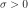

PostAnalyticalSimulation¶
-
class
PostAnalyticalSimulation(*args)¶ Post analytical simulation.
Notes
This class inherits from EventSimulation.
The principle is to perform a simulation study to evaluate the threshold exceedance probability according to an importance density centered around the design point, in the standard space. The importance distribution is the standard distribution of the standard space.
A PostAnalyticalSimulation object can be created only through its derivative classes :
PostAnalyticalImportanceSamplingorPostAnalyticalControlledImportanceSampling.Attributes: thisownThe membership flag
Methods
drawProbabilityConvergence(*args)Draw the probability convergence at a given level. getAnalyticalResult()Accessor to the analytical result. getBlockSize()Accessor to the block size. getClassName()Accessor to the object’s name. getConvergenceStrategy()Accessor to the convergence strategy. getEvent()Accessor to the event. getId()Accessor to the object’s id. getMaximumCoefficientOfVariation()Accessor to the maximum coefficient of variation. getMaximumOuterSampling()Accessor to the maximum sample size. getMaximumStandardDeviation()Accessor to the maximum standard deviation. getName()Accessor to the object’s name. getResult()Accessor to the results. getShadowedId()Accessor to the object’s shadowed id. getVerbose()Accessor to verbosity. getVisibility()Accessor to the object’s visibility state. hasName()Test if the object is named. hasVisibleName()Test if the object has a distinguishable name. run()Launch simulation. setBlockSize(blockSize)Accessor to the block size. setConvergenceStrategy(convergenceStrategy)Accessor to the convergence strategy. setMaximumCoefficientOfVariation(…)Accessor to the maximum coefficient of variation. setMaximumOuterSampling(maximumOuterSampling)Accessor to the maximum sample size. setMaximumStandardDeviation(…)Accessor to the maximum standard deviation. setName(name)Accessor to the object’s name. setProgressCallback(*args)Set up a progress callback. setShadowedId(id)Accessor to the object’s shadowed id. setStopCallback(*args)Set up a stop callback. setVerbose(verbose)Accessor to verbosity. setVisibility(visible)Accessor to the object’s visibility state. getControlProbability -
__init__(*args)¶ Initialize self. See help(type(self)) for accurate signature.
-
drawProbabilityConvergence(*args)¶ Draw the probability convergence at a given level.
Parameters: - level : float, optional
The probability convergence is drawn at this given confidence length level. By default level is 0.95.
Returns: - graph : a
Graph probability convergence graph
-
getAnalyticalResult()¶ Accessor to the analytical result.
Returns: - result :
AnalyticalResult Result of the analytical study which has been performed just before the simulation study centered around the importance factor.
- result :
-
getBlockSize()¶ Accessor to the block size.
Returns: - blockSize : int
Number of terms in the probability simulation estimator grouped together. It is set by default to 1.
-
getClassName()¶ Accessor to the object’s name.
Returns: - class_name : str
The object class name (object.__class__.__name__).
-
getConvergenceStrategy()¶ Accessor to the convergence strategy.
Returns: - storage_strategy :
HistoryStrategy Storage strategy used to store the values of the probability estimator and its variance during the simulation algorithm.
- storage_strategy :
-
getEvent()¶ Accessor to the event.
Returns: - event :
Event Event we want to evaluate the probability.
- event :
-
getId()¶ Accessor to the object’s id.
Returns: - id : int
Internal unique identifier.
-
getMaximumCoefficientOfVariation()¶ Accessor to the maximum coefficient of variation.
Returns: - coefficient : float
Maximum coefficient of variation of the simulated sample.
-
getMaximumOuterSampling()¶ Accessor to the maximum sample size.
Returns: - outerSampling : int
Maximum number of groups of terms in the probability simulation estimator.
-
getMaximumStandardDeviation()¶ Accessor to the maximum standard deviation.
Returns: - sigma : float, 
Maximum standard deviation of the estimator.
-
getName()¶ Accessor to the object’s name.
Returns: - name : str
The name of the object.
-
getResult()¶ Accessor to the results.
Returns: - results :
SimulationResult Structure containing all the results obtained after simulation and created by the method
run().
- results :
-
getShadowedId()¶ Accessor to the object’s shadowed id.
Returns: - id : int
Internal unique identifier.
-
getVerbose()¶ Accessor to verbosity.
Returns: - verbosity_enabled : bool
If True, the computation is verbose. By default it is verbose.
-
getVisibility()¶ Accessor to the object’s visibility state.
Returns: - visible : bool
Visibility flag.
-
hasName()¶ Test if the object is named.
Returns: - hasName : bool
True if the name is not empty.
-
hasVisibleName()¶ Test if the object has a distinguishable name.
Returns: - hasVisibleName : bool
True if the name is not empty and not the default one.
-
run()¶ Launch simulation.
Notes
It launches the simulation and creates a
SimulationResult, structure containing all the results obtained after simulation. It computes the probability of occurence of the given event by computing the empirical mean of a sample of size at most outerSampling * blockSize, this sample being built by blocks of size blockSize. It allows to use efficiently the distribution of the computation as well as it allows to deal with a sample size by a combination of blockSize and
outerSampling.
by a combination of blockSize and
outerSampling.
-
setBlockSize(blockSize)¶ Accessor to the block size.
Parameters: - blockSize : int,

Number of terms in the probability simulation estimator grouped together. It is set by default to 1.
Notes
For Monte Carlo, LHS and Importance Sampling methods, this allows to save space while allowing multithreading, when available we recommend to use the number of available CPUs; for the Directional Sampling, we recommend to set it to 1.
- blockSize : int,
-
setConvergenceStrategy(convergenceStrategy)¶ Accessor to the convergence strategy.
Parameters: - storage_strategy :
HistoryStrategy Storage strategy used to store the values of the probability estimator and its variance during the simulation algorithm.
- storage_strategy :
-
setMaximumCoefficientOfVariation(maximumCoefficientOfVariation)¶ Accessor to the maximum coefficient of variation.
Parameters: - coefficient : float
Maximum coefficient of variation of the simulated sample.
-
setMaximumOuterSampling(maximumOuterSampling)¶ Accessor to the maximum sample size.
Parameters: - outerSampling : int
Maximum number of groups of terms in the probability simulation estimator.
-
setMaximumStandardDeviation(maximumStandardDeviation)¶ Accessor to the maximum standard deviation.
Parameters: - sigma : float,
Maximum standard deviation of the estimator.
-
setName(name)¶ Accessor to the object’s name.
Parameters: - name : str
The name of the object.
-
setProgressCallback(*args)¶ Set up a progress callback.
Can be used to programmatically report the progress of a simulation.
Parameters: - callback : callable
Takes a float as argument as percentage of progress.
-
setShadowedId(id)¶ Accessor to the object’s shadowed id.
Parameters: - id : int
Internal unique identifier.
-
setStopCallback(*args)¶ Set up a stop callback.
Can be used to programmatically stop a simulation.
Parameters: - callback : callable
Returns an int deciding whether to stop or continue.
-
setVerbose(verbose)¶ Accessor to verbosity.
Parameters: - verbosity_enabled : bool
If True, make the computation verbose. By default it is verbose.
-
setVisibility(visible)¶ Accessor to the object’s visibility state.
Parameters: - visible : bool
Visibility flag.
-
thisown¶ The membership flag